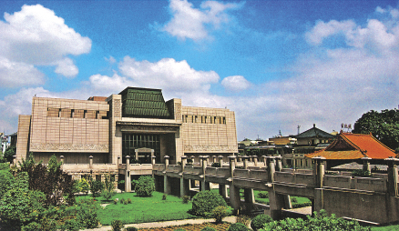

StaMPS Process of Xuzhou City using Sentinel1A in LiDO3
Intro
To monitor the land subsidence inside Xuzhou city and to compare the resule of StaMPS-InSAR with SARscape PS process, and to understand the difference of these two methods.
Xuzhou City
Xuzhou, or known as Pengcheng in ancient times, is a major city in and the fourth largest prefecture-level city of Jiangsu province. It is known for its role as a transportation hub in northwestern Jiangsu, as it has expressways and railway links connecting directly to the provinces of Henan and Shandong, the neighboring port city of Lianyungang, as well as the economic hub Shanghai1.
Xuzhou is “a city of science and education” with a galaxy of talents. There are altogether 31 independent scientific research institutes, 335 R&D institutions and 14 colleges and universities, including China University of Mining & Technology, Xuzhou Medical College, Jiangsu Normal University, Xuzhou Institute of Technology, etc, which jointly provide Xuzhou with solid and strong intellectual support for its economic and social development.
Location
Xuzhou is located in the northwest of Jiangsu Province, the common boundary of Jiangsu Province, Shandong Province, Henan Province and Anhui Province. It is about 300 kilometers away from Nanjing, Jinan, Zhengzhou and Hefei. Covering a land of 1,125 square kilometers, Xuzhou has a population of 8.63 million.
The prefecture-level city of Xuzhou administers 10 county-level divisions, including five districts, two county-level cities and three counties.
Climate
By the influence of warm temperature zone semi-moist monsoon climate, Xuzhou has apparently different four seasons with cool summer and warm winter. The yearly average temperature is 14℃ with the yearly average rainfall volume of 866mm and the frost free period in Xuzhou is between 200 and 220 days. The yearly average sunshine period is 2,100 hours to 2,400 hours. The best time for traveling in Xuzhou is in fall.

Economy
Xuzhou is rich in resources and diversified in agricultural and sideline produce. It has a huge reserve of high-quality mineral resources such as coal, iron, limestone, marble stone, etc.
The industrialization management of agriculture has achieved great progress. The guiding role of industrial economy has being continuously intensified. Coal, electronic, fabric, medicine and construction material industries have certain scope and level.
Xuzhou Construction Machinery Group (XCMG), Weiwei Group and Datun Coal and Electricity Corporation are listed the top 520 corporations in China. Tertiary industry has developed boomingly and the role of regional logistics center and tourism center has further intensified. Foreign-oriented economy has made great headway. Many world well-known companies such as Caterpillar, Rockwell and Haier Group settled here.
The construction machinery manufacturer XCMG is the largest company based in Xuzhou. It is the world’s 10th largest construction equipment maker measured by 2011 revenues, and the third-largest based in China (after Sany and Zoomlion).
History and Culture
With a civilization of over 5,000 years, Xuzhou was built 2,600 years ago and is one of the most ancient cities in China. Xuzhou was one of the nine states of the country over 3,000 years ago.
As a city of Han Dynasty Culture, Xuzhou was the hometown of Liu Bang (256-195BC), the first emperor of Western Han Dynasty. The Han Dynasty was divided into Eastern Han and Western Han periods (206BC-189AD) lasting for over 400 years. During which the local kings in Xuzhou left numerous historical heritages, including Han clay figurines, Han stone relief carvings and Han Tombs, which are called “Three Wonders of the Han Dynasty”. They are representatives of the Chinese Han culture.

Dataset
134 Sentinel1-A SLC IW arcsending SAR data with path 142 and frame 106 from 2016-08-29 to 2021-11-07 has been acquired from ASF data search vertex2.
File name: S1A_IW_SLC__1SDV_20190428T101159_20190428T101227_026989_0309CA_8C7C
1 | |
Pre-process with snap2stamps
WSL and Xlaunch
In Xlaunch:
One large window -> Start no client -> Disable access control
Ubuntu on Windows
1 | |
SNAP Desktop
- Select optimal master in SNAP using
Radar / Interferometric / InSAR Stack Overview
- Perform subsetting of whole image using TOPSAR Split via
Radar / Sentinel-1 TOPS / S-1 TOPS Split. Set the processing parameters- subswath IW2
- polarization Vv
- bursts 6-10

- Get LAT/LON MIN/MAX (bounding box) for PSI area of interest. This can be obtained e.g. from ROI polygon in QGIS
Layer Properties | Metadata | Properties | Extentor ArcGIS.
Extent of Study area:
Top: 34.585279
Bottom: 34.022282
Left: 116.811255
Right: 117.713315
snap2stamps in WSL
- Edit
project.confto set up configuration for your project.
1 | |
-
Move the master (zip + TOPS - Split Output) to the directory
masterin your PROJECTFOLDER/mnt/i/SAR/Data/Xuzhou_city/master/. -
Make sure that all slave images (zip) are stored in the subfolder
slavesin the PROJECTFOLDER/mnt/i/SAR/Data/Xuzhou_city/slaves/. -
Check if all libraries are available for your Python 2 installation (you might need to
pip install pathlib). -
Run the python scripts of snap2stamp directly in your shell:
1 | |
-
Copy Xuzhou_city folder to LiDO use Winscp and run the fellowing scripts in LiDO.
-
Edit the
project.conffile in\work\smyumeng\snap2stamps\bin:1
2
3
4
5
6
7
8
9
10
11
12
13
14
15
16
17
18
19
20
21
22
23######### CONFIGURATION FILE ######
###################################
# PROJECT DEFINITION
PROJECTFOLDER=/work/smyumeng/Sentinel_PS/Xuzhou_city/
GRAPHSFOLDER=/work/smyumeng/snap2stamps/graphs
##################################
# PROCESSING PARAMETERS
IW1=IW2
MASTER=/work/smyumeng/Sentinel_PS/Xuzhou_city/master/S1A_IW_SLC__1SDV_20190919T101207_20190919T101235_029089_034D30_8446_split.dim
##################################
# AOI BBOX DEFINITION
LONMIN=116.811255
LATMIN=34.022282
LONMAX=117.713315
LATMAX=34.585279
##################################
# SNAP GPT
GPTBIN_PATH=/home/smyumeng/snap/bin/gpt
##################################
# COMPUTING RESOURCES TO EMPLOY
CPU=16
CACHE=160G
##################################
1 | |
-
The data final output structure after performing the last step should contain these four folders:
rslc,diff0,geoanddem. -
Check for empty interferograms. If any exist, remove files containing the date of the empty file from the folders
rslcanddiff0. Otherwise, this will throw warnings related to 0 mean amplitude during the final preparation step use in stamps (i.e.mt_prep_snap) and eventually screw up the selection of PS candidates. -
copy
INSAR_master_datefolder from MATLAB workstation -
prepare the data set for final use in StaMPS
1 | |
- launch
matlabto continue with StaMPS PS analysis
MATLAB
In LiDO, cd to shell scripts folder. In this case is cd /work/smyumeng/project/sentinel_scripts, edit script stamps13, stamps678 and run shell scripts.
本博客所有文章除特别声明外，均采用 CC BY-SA 4.0 协议 ，转载请注明出处！